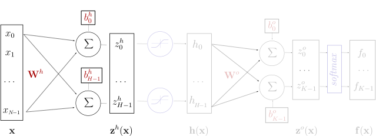
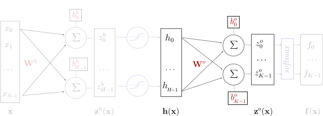
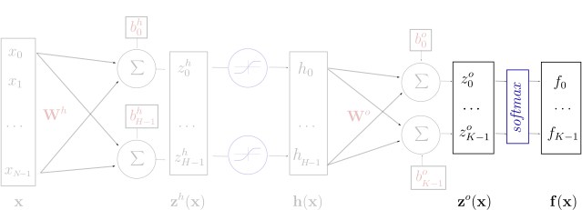
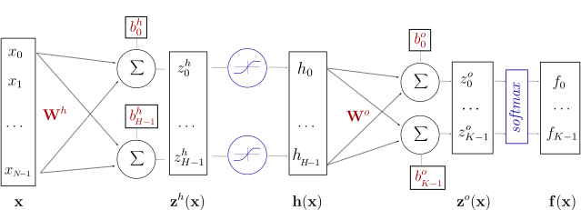
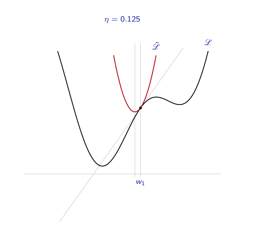
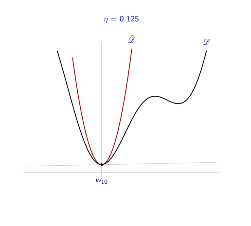
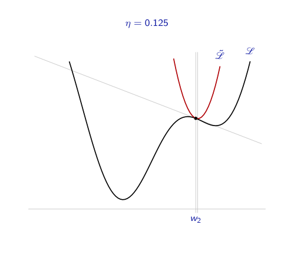

class: center, middle # Introduction au Deep Learning ## Réseaux de Neurones ### Evann Courdier 18 juin 2019 .affiliations[   ] --- # Plan de la journée ### En théorie... - .grey[Introduction: Deep Learning - Pourquoi et où ?] - Réseau de neurones: Description et entraînements - .grey[Vision: Introduction aux réseaux neuronnaux convolutionnels] - .grey[Le deep éthique] ### .grey[En pratique...] - .grey[Implementation de word2vec en PyTorch] - .grey[Utilisation d'un CNN pré-entrainé] --- ## Notations - Un réseau de neurones correspond à une fonction f qui a des paramètres ajustables $W$: $$ \mathbf{f}(\cdot; W): \mathbb{R}^N \rightarrow (0, 1)^K $$ -- - Pour $s$ un élément du dataset $S$: - entrée: $\mathbf{x}^s \in \mathbb{R}^N$ - sortie attendue: $y^s \in [0, K-1]$ -- - Probabilité: $\mathbf{f}(\mathbf{x}^s; W)_c = p(Y=c|X=\mathbf{x}^s)$ .credit[Slide credit: C. Ollion & O. Grisel] --- ## Neurone Artificiel .center[ <img src="images/artificial_neuron.svg" style="width: 500px;" /> ] .credit[Slide credit: C. Ollion & O. Grisel] --- ## Neurone Artificiel .center[ <img src="images/artificial_neuron_2.svg" style="width: 500px;" /> ] .credit[Slide credit: C. Ollion & O. Grisel] -- .center[ $z(\mathbf{x}) = w_0 x_0 + w_1 x_1 + ... + w_n x_n + b = \mathbf{w}^T \mathbf{x} + b$ ] --- ## Neurone Artificiel .center[ <img src="images/artificial_neuron_2.svg" style="width: 500px;" /> ] .credit[Slide credit: C. Ollion & O. Grisel] .center[ $z(\mathbf{x}) = w_0 x_0 + w_1 x_1 + ... + w_n x_n + b = \mathbf{w}^T \mathbf{x} + b$ $f(\mathbf{x}) = g(z(\mathbf{x})) = g(\mathbf{w}^T \mathbf{x} + b)$ ] -- - $\mathbf{x}, f(\mathbf{x}) \,\,$ Entrée et sortie - $z(\mathbf{x})\,\,\,$ Pré-activation - $\mathbf{w}, b\,\,$ Poids et biais - $g\,\,\,\,\,\,\,\,$ Fonction d'activation (non-linéarité) .credit[Slide credit: C. Ollion & O. Grisel] --- ## Couche de Neurones .center[ <img src="images/neural_network.svg" style="width: 400px;" /> ] .credit[Slide credit: C. Ollion & O. Grisel] --- ## Couche de Neurones .center[ ] .credit[Slide credit: C. Ollion & O. Grisel] -- .center[ <img src="images/latex1.svg" style="width: 500px;" /> ] .center[ $\mathbf{z(x)} = \mathbf{W} \mathbf{x} + \mathbf{b}$ $\mathbf{f}(\mathbf{x}) = g(\mathbf{z(x)}) = g(\mathbf{W} \mathbf{x} + \mathbf{b})$ ] - $\mathbf{W}, \mathbf{b}\,\,$ now matrix and vector .credit[Slide credit: C. Ollion & O. Grisel] --- ## Réseau à une couche cachée .center[  ] <br/> - $\mathbf{z}^h(\mathbf{x}) = \mathbf{W}^h \mathbf{x} + \mathbf{b}^h$ - <span style="color:#cccccc"> $\mathbf{h}(\mathbf{x}) = g(\mathbf{z}^h(\mathbf{x})) = g(\mathbf{W}^h \mathbf{x} + \mathbf{b}^h)$</span> - <span style="color:#cccccc"> $\mathbf{z}^o(\mathbf{x}) = \mathbf{W}^o \mathbf{h}(\mathbf{x}) + \mathbf{b}^o$</span> - <span style="color:#cccccc"> $\mathbf{f}(\mathbf{x}) = softmax(\mathbf{z}^o) = softmax(\mathbf{W}^o \mathbf{h}(\mathbf{x}) + \mathbf{b}^o)$</span> .credit[Slide credit: C. Ollion & O. Grisel] ??? also named multi-layer perceptron (MLP) feed forward, fully connected neural network logistic regression is the same without the hidden layer --- ## Réseau à une couche cachée .center[ <img src="images/neural_network_hidden_2.svg" style="width: 700px;" /> ] <br/> - <span style="color:#cccccc"> $\mathbf{z}^h(\mathbf{x}) = \mathbf{W}^h \mathbf{x} + \mathbf{b}^h$</span> - $\mathbf{h}(\mathbf{x}) = g(\mathbf{z}^h(\mathbf{x})) = g(\mathbf{W}^h \mathbf{x} + \mathbf{b}^h)$ - <span style="color:#cccccc"> $\mathbf{z}^o(\mathbf{x}) = \mathbf{W}^o \mathbf{h}(\mathbf{x}) + \mathbf{b}^o$</span> - <span style="color:#cccccc"> $\mathbf{f}(\mathbf{x}) = softmax(\mathbf{z}^o) = softmax(\mathbf{W}^o \mathbf{h}(\mathbf{x}) + \mathbf{b}^o)$</span> .credit[Slide credit: C. Ollion & O. Grisel] --- ## Réseau à une couche cachée .center[  ] <br/> - <span style="color:#cccccc"> $\mathbf{z}^h(\mathbf{x}) = \mathbf{W}^h \mathbf{x} + \mathbf{b}^h$</span> - <span style="color:#cccccc"> $\mathbf{h}(\mathbf{x}) = g(\mathbf{z}^h(\mathbf{x})) = g(\mathbf{W}^h \mathbf{x} + \mathbf{b}^h)$</span> - $\mathbf{z}^o(\mathbf{x}) = \mathbf{W}^o \mathbf{h}(\mathbf{x}) + \mathbf{b}^o$ - <span style="color:#cccccc"> $\mathbf{f}(\mathbf{x}) = softmax(\mathbf{z}^o) = softmax(\mathbf{W}^o \mathbf{h}(\mathbf{x}) + \mathbf{b}^o)$</span> .credit[Slide credit: C. Ollion & O. Grisel] --- ## Réseau à une couche cachée .center[  ] <br/> - <span style="color:#cccccc"> $\mathbf{z}^h(\mathbf{x}) = \mathbf{W}^h \mathbf{x} + \mathbf{b}^h$</span> - <span style="color:#cccccc"> $\mathbf{h}(\mathbf{x}) = g(\mathbf{z}^h(\mathbf{x})) = g(\mathbf{W}^h \mathbf{x} + \mathbf{b}^h)$</span> - <span style="color:#cccccc">$\mathbf{z}^o(\mathbf{x}) = \mathbf{W}^o \mathbf{h}(\mathbf{x}) + \mathbf{b}^o$</span> - $\mathbf{f}(\mathbf{x}) = softmax(\mathbf{z}^o) = softmax(\mathbf{W}^o \mathbf{h}(\mathbf{x}) + \mathbf{b}^o)$ .credit[Slide credit: C. Ollion & O. Grisel] --- ## Réseau à une couche cachée .center[] ### Représentation alternative .center[ ] .credit[Slide credit: C. Ollion & O. Grisel] --- ## Réseau à une couche cachée .center[ ] ### Implémentation PyTorch ```py model = torch.nn.Sequential( torch.nn.Linear(D_in, H), # weight matrix dim [D_in x H] torch.nn.RELU(), torch.nn.Linear(H, D_out), # weight matrix dim [H x D_out] torch.nn.Softmax(), ) ``` --- ## Différentes fonctions d'activation <br/> .center[ <img src="images/activation_functions.svg" style="width: 780px;" /> ] <br/></br> - Bleu: Fonction d'activation - Vert: Derivée .credit[Slide credit: C. Ollion & O. Grisel] --- ## Rappel - Notations - Un réseau de neurones correspond à une fonction f qui a des paramètres ajustables $W$: $$ \mathbf{f}(\cdot; W): \mathbb{R}^N \rightarrow [0, 1]^K $$ - Pour $s$ un élément du dataset $S$: - entrée: $\mathbf{x}^s \in \mathbb{R}^N$ - sortie attendue: $y^s \in [0, K-1]$ - Probabilité: $\mathbf{f}(\mathbf{x}^s; W)_c = p(Y=c|X=\mathbf{x}^s)$ .credit[Slide credit: C. Ollion & O. Grisel] --- ## La Loss On définit une fonction de **loss** (perte) qui, pour un élément du dataset, évalue la qualité de la prédiction de notre réseau. Plus la valeur de la loss est basse pour un exemple donné, meilleure est la prédiction du réseau pour cet élément. Pour un élément $(x, y)$ de S, on peut définir la fonction de loss $l$ comme: $$ l(f(x, \theta), y) = - \log(f(x, \theta)_{y_c}) $$ .center[ ] --- ## La Loss Pour un exemple donné, la loss vaut: $$ l(\mathbf{f}(\mathbf{x}^s;\theta), y^s) = -\log \mathbf{f}(\mathbf{x}^s;\theta)\_{y^s} $$ On appelle fonction de coût la valeur moyenne de la loss calculée sur l'ensemble du dataset d'entraînement: $$ L\_S(\theta) = - \frac{1}{|S|} \sum\_{s \in S} \log \mathbf{f}(\mathbf{x}^s;\theta)\_{y^s} $$ Entraîner le réseau revient à trouver les valeurs des paramètres $\mathbf{\theta} = ( \mathbf{W}^h; \mathbf{b}^h; \mathbf{W}^o; \mathbf{b}^o )$ qui minimisent la fonction de coût. En pratique, pour chaque exemple du dataset S, on essaye de minimiser la fonction de loss associée. ??? On aime bien prendre la fonction log car elle simplifie les calculs dans la théorie qui justifie proprement la loss. --- ## Rappel - Gradient d'une fonction .center[ <img src="images/gradient.jpg" height="400px" /> ] --- ## Rappel - Descente de Gradient <br> .center[<img src="images/gd_1.png" height="400px"/>] .credit[Slide credit: F. Fleuret] --- ## Rappel - Descente de Gradient <br> .center[] .credit[Slide credit: F. Fleuret] --- ## Rappel - Descente de Gradient <br> .center[<img src="images/gd_3.png" height="400px"/>] .credit[Slide credit: F. Fleuret] --- ## Rappel - Descente de Gradient <br> .center[] .credit[Slide credit: F. Fleuret] --- ## Rappel - Descente de Gradient <br> .center[<img src="images/gd_5.png" height="400px"/>] .credit[Slide credit: F. Fleuret] --- ## Rappel - Descente de Gradient <br> .center[] .credit[Slide credit: F. Fleuret] --- ## Rappel - Descente de Gradient <br> .center[<img src="images/gd_7.png" height="400px"/>] .credit[Slide credit: F. Fleuret] --- ## Rappel - Descente de Gradient <br> .center[<img src="images/gd_8.png" height="400px"/>] .credit[Slide credit: F. Fleuret] --- ## Rappel - Descente de Gradient <br> .center[<img src="images/gd_9.png" height="400px"/>] .credit[Slide credit: F. Fleuret] --- ## Rappel - Descente de Gradient <br> .center[<img src="images/gd_10.png" height="400px"/>] .credit[Slide credit: F. Fleuret] --- ## Rappel - Descente de Gradient <br> .center[] .center[ ### Minimum Global ] .credit[Slide credit: F. Fleuret] --- ## Rappel - Descente de Gradient <br> .center[] .credit[Slide credit: F. Fleuret] --- ## Rappel - Descente de Gradient <br> .center[] .credit[Slide credit: F. Fleuret] --- ## Rappel - Descente de Gradient <br> .center[] .credit[Slide credit: F. Fleuret] --- ## Rappel - Descente de Gradient <br> .center[<img src="images/gd_15.png" height="400px"/>] .credit[Slide credit: F. Fleuret] --- ## Rappel - Descente de Gradient <br> .center[] .credit[Slide credit: F. Fleuret] --- ## Rappel - Descente de Gradient <br> .center[<img src="images/gd_17.png" height="400px"/>] .credit[Slide credit: F. Fleuret] --- ## Rappel - Descente de Gradient <br> .center[<img src="images/gd_18.png" height="400px"/>] .credit[Slide credit: F. Fleuret] --- ## Rappel - Descente de Gradient <br> .center[] .credit[Slide credit: F. Fleuret] --- ## Rappel - Descente de Gradient <br> .center[] .credit[Slide credit: F. Fleuret] --- ## Rappel - Descente de Gradient <br> .center[<img src="images/gd_21.png" height="400px"/>] .credit[Slide credit: F. Fleuret] --- ## Rappel - Descente de Gradient <br> .center[<img src="images/gd_22.png" height="400px"/>] .credit[Slide credit: F. Fleuret] --- ## Rappel - Descente de Gradient <br> .center[<img src="images/gd_23.png" height="400px"/>] .center[ ### Minimum Local ] .credit[Slide credit: F. Fleuret] --- ## Entraînement du réseau (SGD) ### Initialiser tous les paramètres $\mathbf{\theta}$ aléatoirement -- ### Pour $k$ époques faire: - Sélectionner un élément $x_s$ du dataset S et calculer sa prédiction -- - Calculer les gradients: $\Delta = \nabla_\theta L\(x_s, \theta)$ -- - Mettre à jour les paramètres: $\mathbf{\theta} \leftarrow \mathbf{\theta} - \eta \Delta$ -- <br/> ### S'arrêter lorsque la loss ne décroit plus sur l'ensemble de validation --- ## Backpropagation .center[ ] .center[ <img src="images/flow_graph_b.svg" width="90%" /> ]